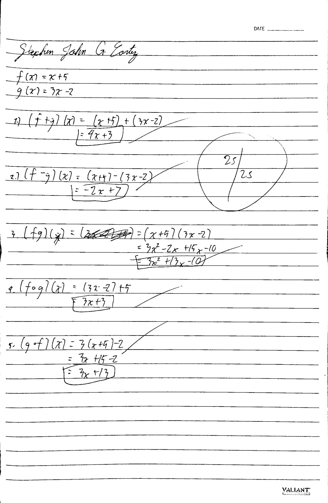
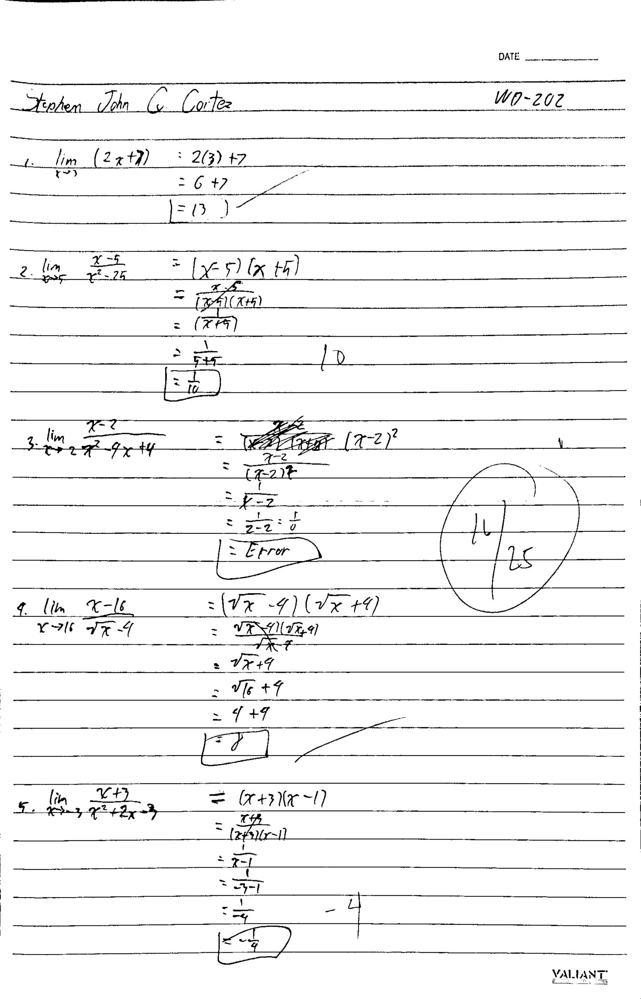
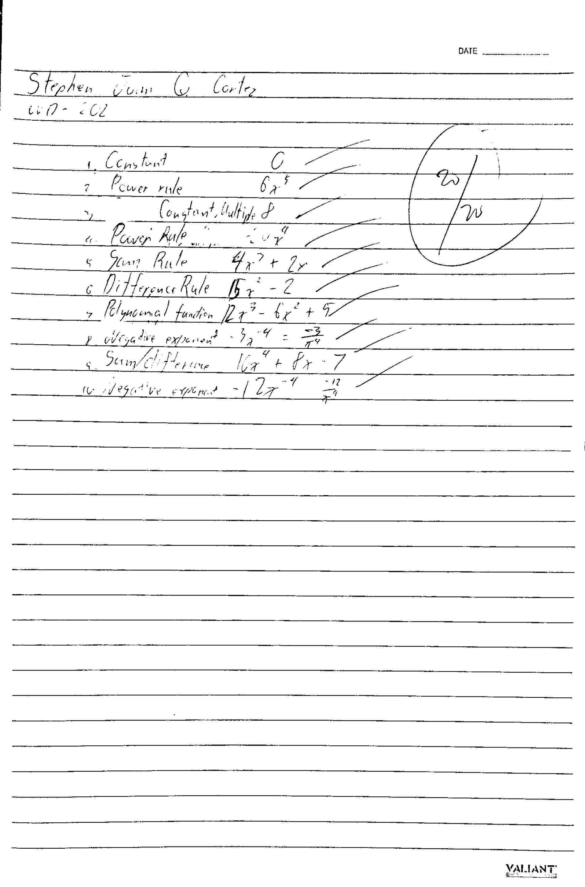
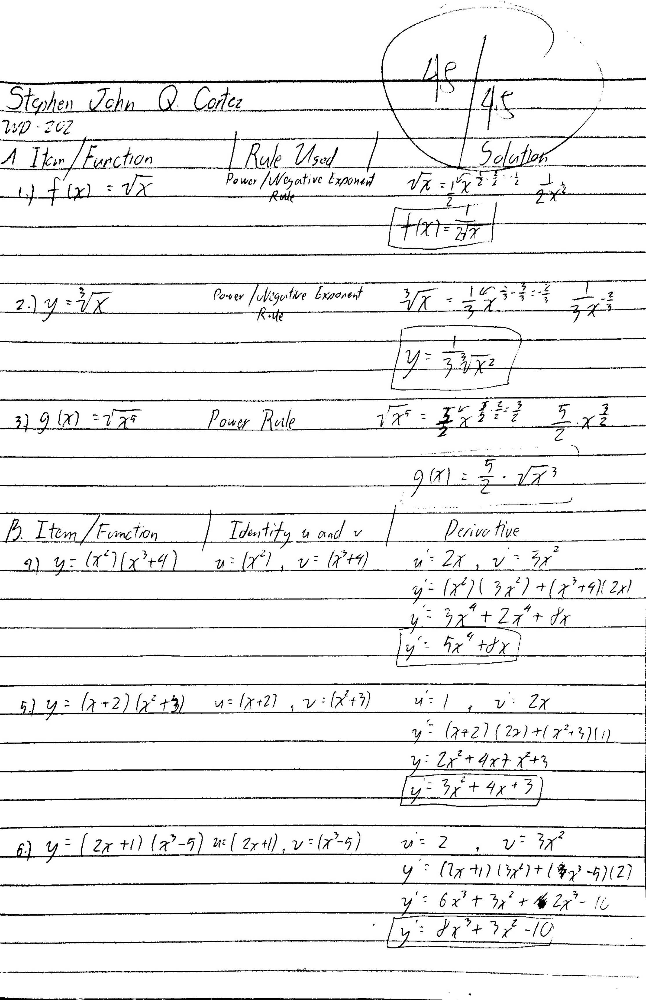
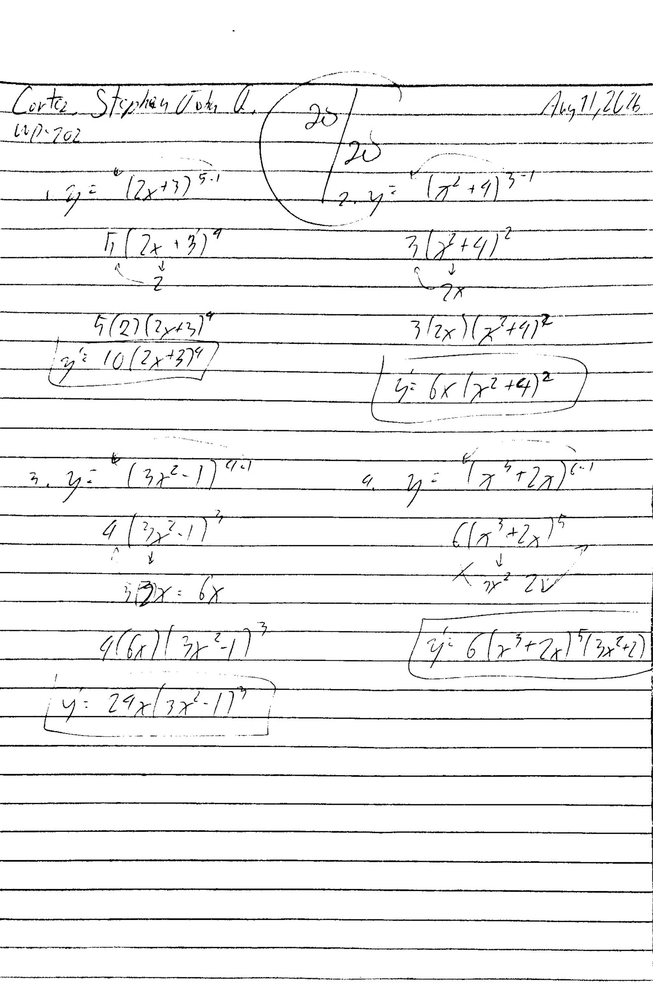
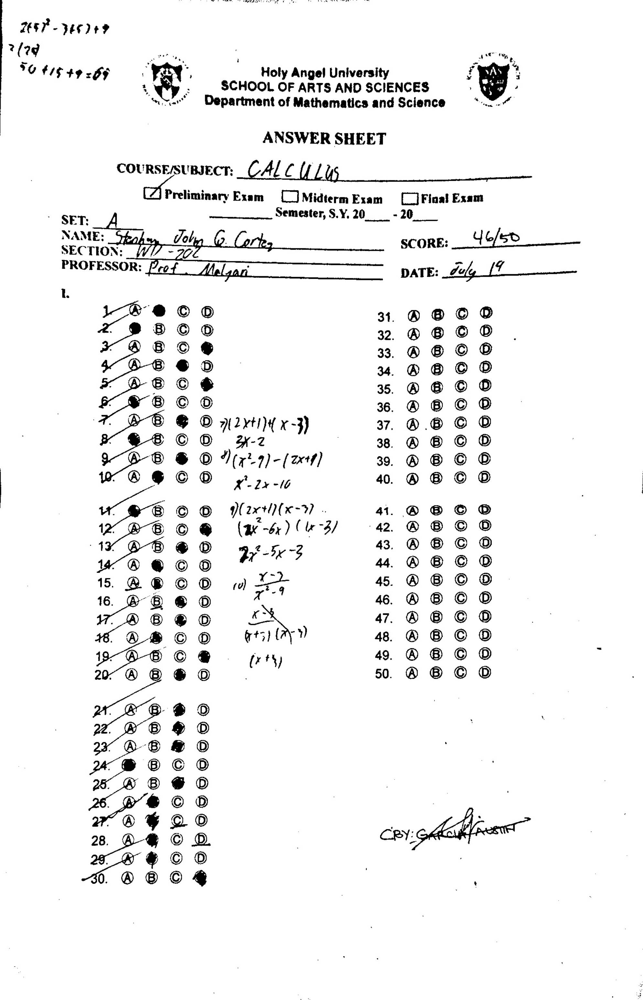
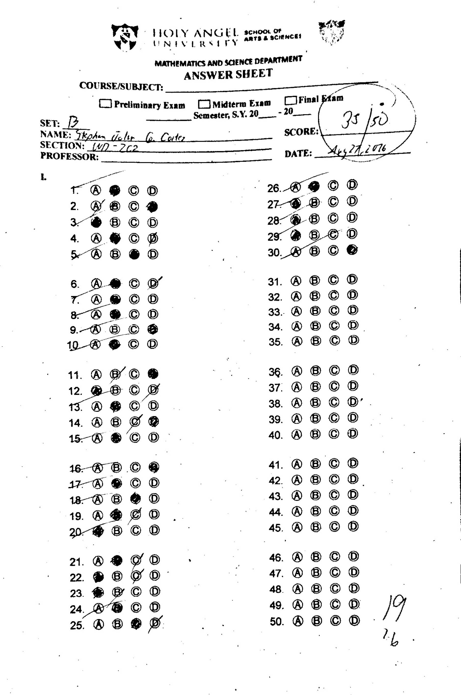
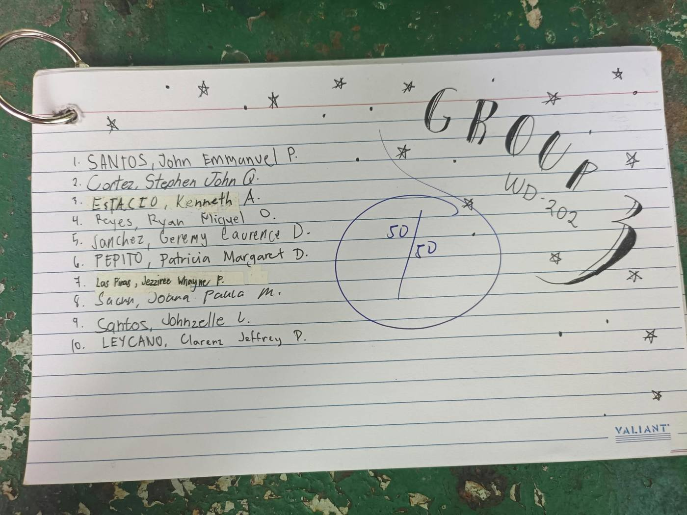
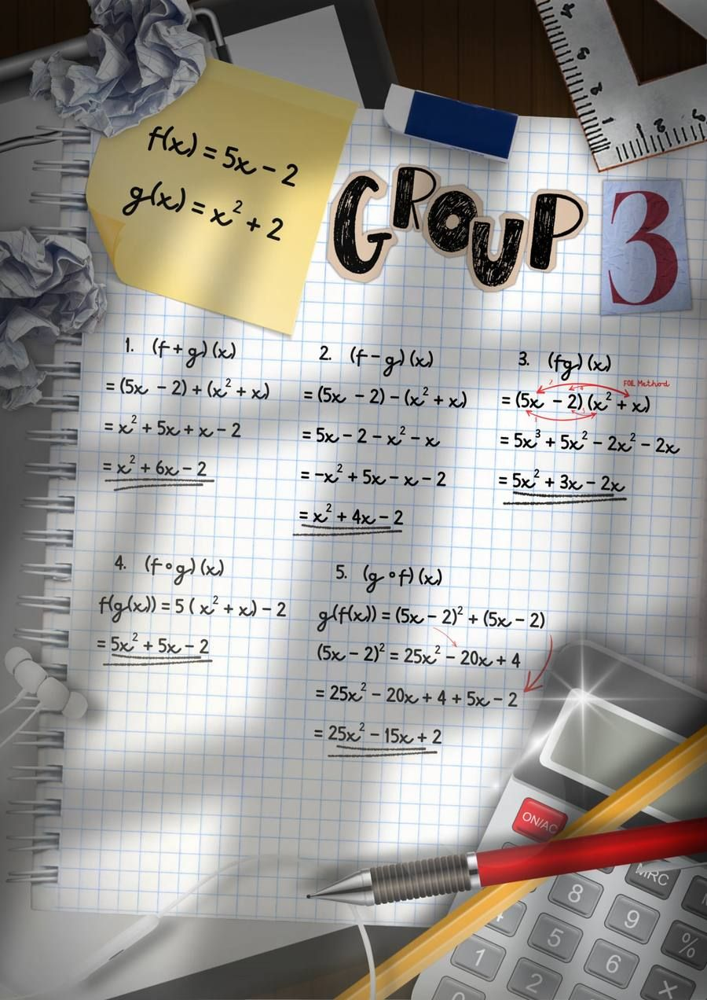

Learning Artifacts
Each artifact is a scan of my original handwritten work. Tap any image to enlarge it.
Activity – Composition of Functions
Description: Using f(x) = x + 5 and g(x) = 3x − 2, I found the sum, difference, and product of the two functions, along with both compositions, f∘g and g∘f. I expanded the product by hand with the FOIL method.

Activity – Evaluating Limits
Description: Five limit problems that called for direct substitution, factoring out a common binomial, and rationalizing a radical expression to get rid of a zero-over-zero indeterminate form.

Activity – Basic Differentiation Rules
Description: Ten short exercises using the constant, power, sum, and difference rules on polynomials and on rational functions rewritten with negative exponents.

Activity – Product Rule, Quotient Rule & Fractional Exponents
Description: Nine exercises in all: converting roots into fractional exponents, labeling u and v before using the product rule on polynomial products, and using the quotient rule on three rational functions.

Activity – The Chain Rule
Description: Four composite functions differentiated with the chain rule. For each one, I wrote out the derivative of the inner function first, then combined it with the derivative of the outer function.

Prelim Examination – Answer Sheet (Set A)
Description: 50-item multiple-choice examination in Calculus covering the prelim topics, with scratch work for items that needed computation.

Midterm Examination – Answer Sheet (Set B)
Description: 50-item multiple-choice examination covering the midterm topics.

Group Project – Calculus Infographic
Description: The first group project of the school year, a video infographic made by Group 3 on the topic of Calculus in IT and Web Development.
Group Project – Calculus Card Deck
Description: A deck of ten flashcards on limits. Each card shows a limit problem on the front and its worked solution on the back.

Group Project – Calculus Poster
Description: A creative poster presenting five function operation problems and their solutions.
